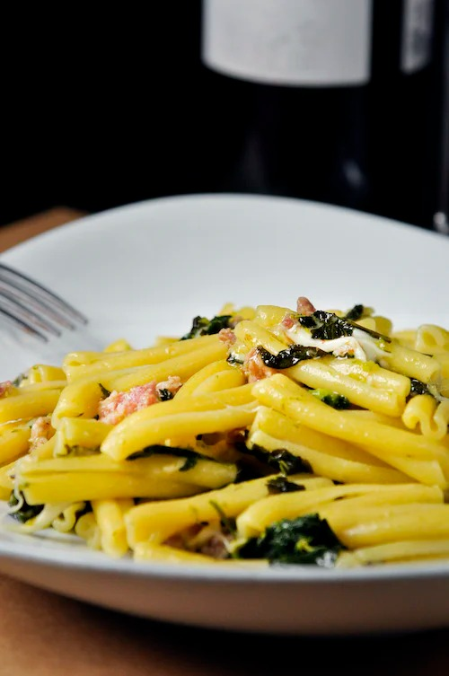
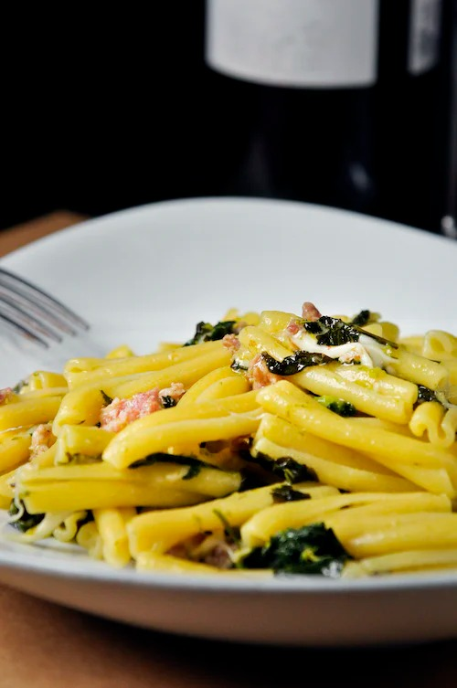

Carbohydrates
Carbohydrate is one of the three micronutrients through which a human body acquires energy. It consists of carbon, hydrogen and oxygen atoms at its chemical level.
- Glucose
- Starch
- Lactose
- Soft drinks
- Popcorn

 
